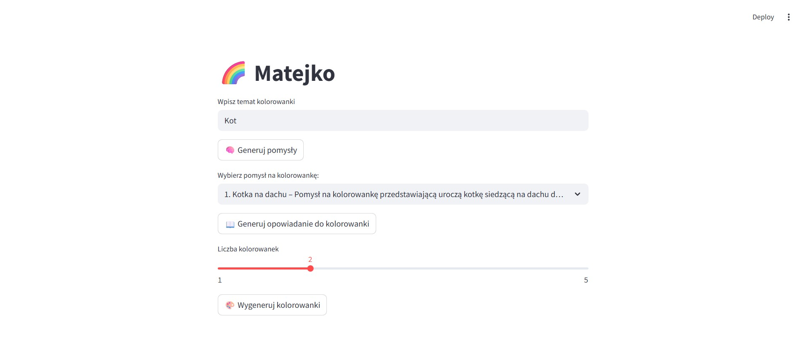

Matejko
Utworzono: 29.04.2025
üìå Opis projektu:
Stworzyłem interaktywną aplikację wykorzystującą sztuczną inteligencję do generowania kolorowanek i opowiadań na wybrany temat. Celem projektu było stworzenie narzędzia, które wspiera rozwój wyobraźni dzieci i zapewnia kreatywną rozrywkę podczas zimowych lub deszczowych dni – zarówno w domu, jak i w szkole.
Funkcjonalności aplikacji:
- üîé Tematyka kolorowanek: u≈ºytkownik wpisuje w≈Çasny temat (np. ‚Äûsmoki‚Äù, ‚Äûlas‚Äù, ‚Äûdinozaury‚Äù), a AI podpowiada listƒô kilku precyzyjnych wariant√≥w.
- üé® Generowanie grafik: po wybraniu tematu i liczby kolorowanek, AI generuje czarno-bia≈Çe ilustracje do wydruku (poprzez DALL¬∑E).
- üìÑ Tworzenie opowiada≈Ñ: u≈ºytkownik mo≈ºe wygenerowaƒá kr√≥tkie opowiadanie do wybranej kolorowanki (np. bajka, przygoda, opis sytuacji).
- üì• Pobieranie i druk: ka≈ºdą kolorowankƒô mo≈ºna ≈Çatwo pobraƒá jako plik PNG.
- üßí Dostosowanie do dzieci: interfejs jest prosty, kolorowy i bezpieczny ‚Äì gotowy do u≈ºycia przez dzieci lub z pomocą doros≈Çych.
Grupa docelowa:
- Rodzice
- Nauczyciele i wychowawcy
- Dzieci (z pomocą dorosłych)
- Pracownicy świetlic, bibliotek i przedszkoli
Wykorzystane technologie:
- Frontend:
Streamlit - Backend AI:
OpenAI API(do tekstów i tematów),DALL·E(do grafik) - PDF/obrazki
- Obsługa plików: generowanie i eksport do formatu
.png
Tutaj trzy screeny z projektu:
